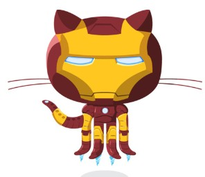

All About GitHub
Q. What is a version control system?
A. VCS gives software engineering teams complete visibility into the code history and a single source of documentation for all files.
Q. What is Git?
A. A free and open-source distributed version control system. It is designed to manage changes to files and projects over time.
Q. What is the difference between Git and GitHub?
A. Git creates a branch, makes edits to files, and merges specific changes back into the main copy of the file. GitHub showcase or share your work, let others review your code, track and manage changes, and collaborate on a shared project without worrying that changes will impact the work of your team.
Q. What company owns it now?
A. Microsoft owns it
Q. How much does a GitHub account cost?
A. It's a mix of both free and paid, depending on what type of plan you need.
Git/GitHub terms:
Repository: a place where you can store your code, files, and each file's revision history.
Commit: Snapshots of your repository.
Fork: A new repository that shares code and visibility settings with the original "upstream" repository.
Push: uploading local commits and changes from a local Git repository to a remote repository.
Pull requests: A Proposal to merge a set of changes from one branch into another.
Workflows: A configurable automated process that will run one or more jobs.
Issues: Facilitate the tracking and management of various aspects of a software development project.
Raw button: You can view or copy the raw content of a file without any styling.
Blame button: to show the line-by-line revision history for a file.
